august 17, 2026
greetings star people. i am going to scotland! for 4 months! jeepers! oh my! thought i shud tell u that, but i think most of u already know. i am leaving in 2 days. going to london for a night then waking up at 4am to train to a little town called Ayr where i will stay at a friends house for a couple nights and then set off into the scottish countryside to do who knows what. im bringing my camping gear so ima hit some spots u know. so vive la scotland!! or whatever they say. ok looked it up it is 'Alba gu bràth!'. i think i'll need to practice the pronounciation of that one a little bit.
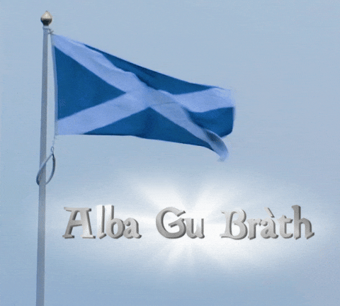
august 16, 2026
ah! i am sitting here upon a chair. hmm thinking. i tried to write a haiku and it failed miserably. but maybe i will try again tmr and succeed. everything i write rn is making me so upset. i am frustrated how every word i pick sounds. it’s like when you listen to your voice in a video and u are like ew what!! anyways.. what do u guys want to hear about? i guess i have never asked u that before. there’s also like no way to contact me… hmm. maybe i should make that a thing. but in my mind no one is actually reading this until someone is like ‘omg i read ur blog!’ and i start blushing profusely and am like ‘rlly??!?!?? stawp xD’. kinda forgot that i set a goal to read 10 books this year and i have only read 4!!! uh oh! so i maybe should get on dat. but here's some proof i have been reading (scroll---->)
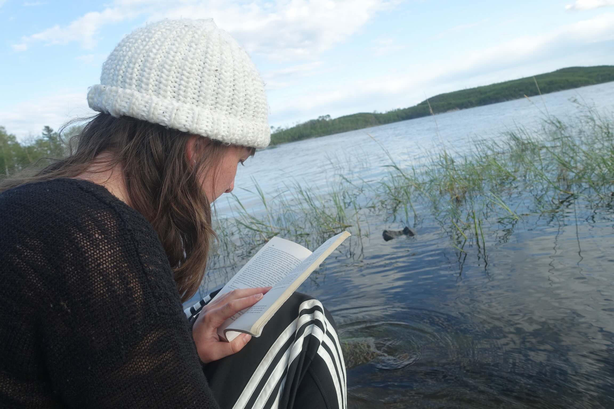
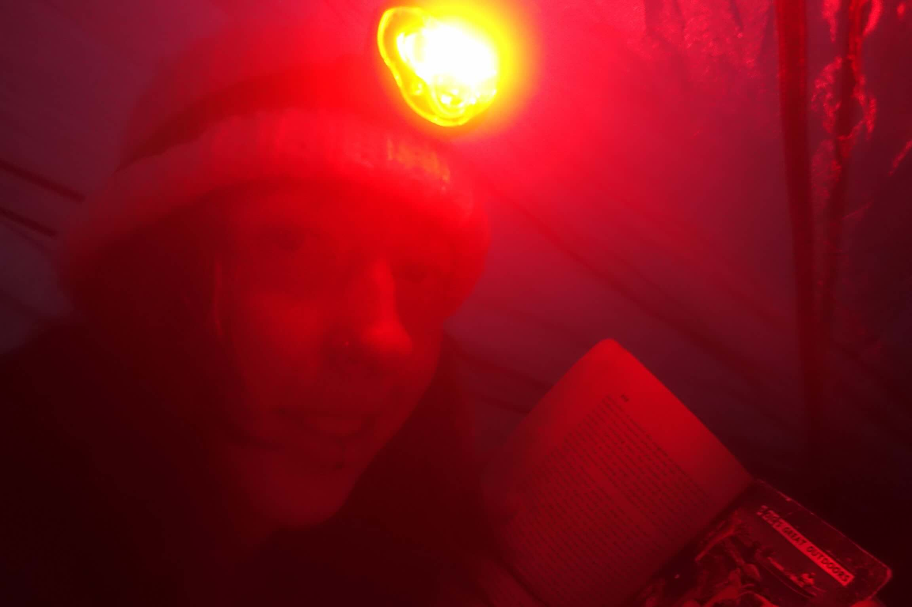
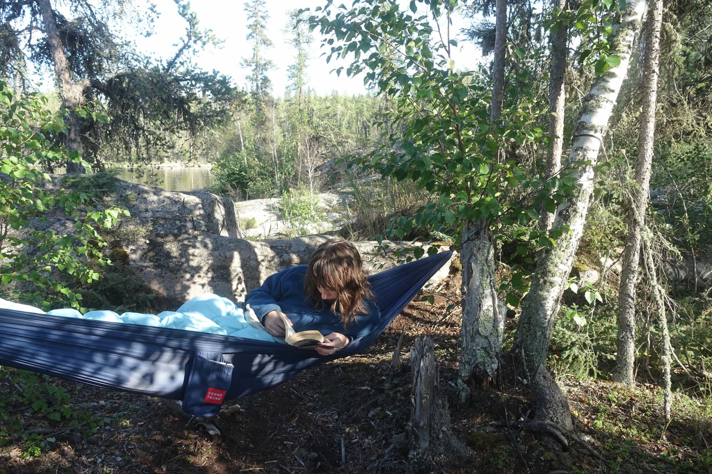
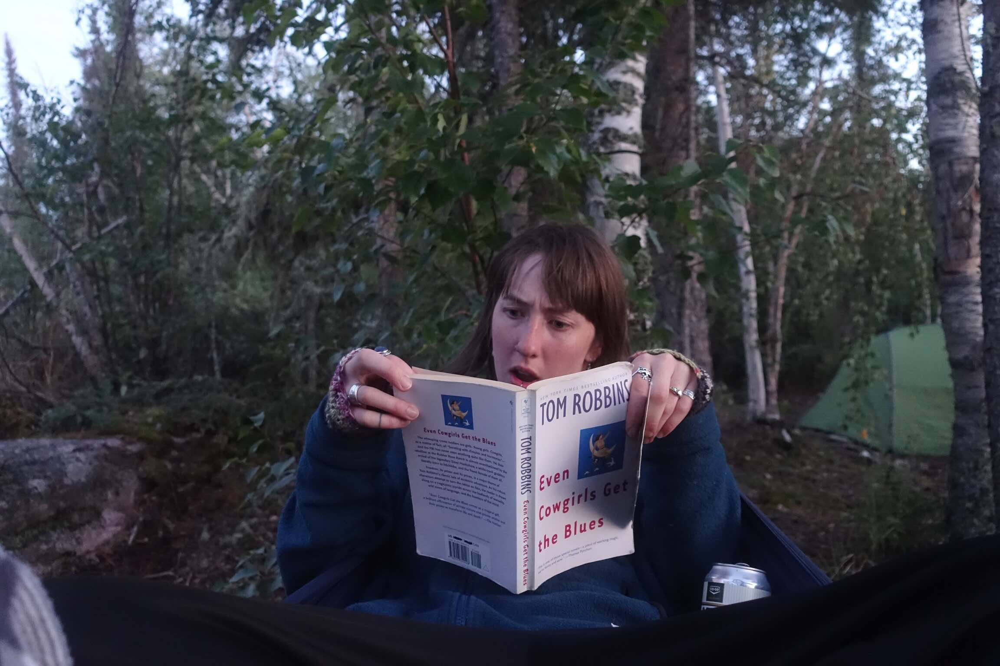
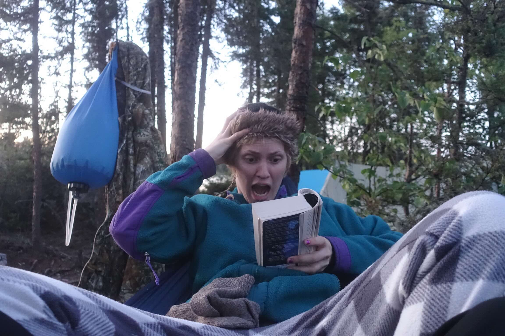
august 13, 2026
i gotta say i love headphone laptop combo. im in a different dimension! computer is magical. i feel like me and lofi girl would be friends.
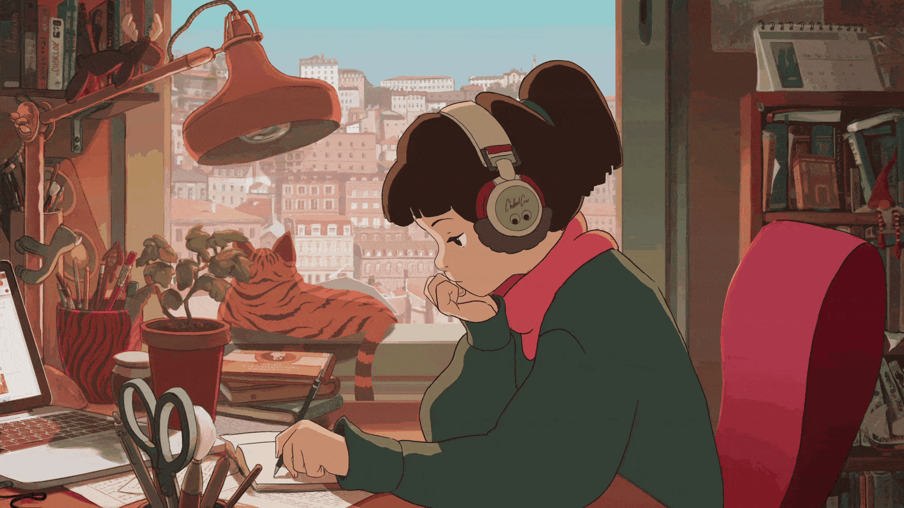
august 11, 2026
i am back from the bush. the familiar familial. didn't have my phone which i rlly didnt notice that much. i got home and checked it secretly hoping for some magic light to shine upon me but there was none. i love having my phone cause its the magical portal to all the people in my life. but i hate having my phone cause its the magican portal that frequently runs dry. not to say that im not the problem here ya know cause im not rlly a reacher-outer or a hows-it-goinger or a what-are-u-doinger or a heyer or a i-miss-youer or a call-me-when-you-get-thiser. maybe i should be but i think this is the lonely nature of being human and i just need to sit in it for a little while. also the people i would text i wont see in 4 months (5 dog years), which feels like too long of a time to think about right now. i feel like im going slightly insane cause the only people i have been talking to for the past 5 days have been my family and tom robbins who is speaking to me through 'even cowgirls get the blues', and all of the above are not the sanist saints. i reached a point of childhood euphoria/dilusion on the drive home from stanely misson and made up a complete story in my head of this girl named lassy who was a bush pilot. i want to be lassy. she had a gap tooth and was free. have been playing with the idea of indenting... what do u think? bar berson? no wait... car cerson. par sterson. oh i got it.. star person!!?? mwah! love will prevail and all that fear is just shadowing the garden u are feeding!! so long cowgirls!
august 6, 2026
to be honest i am sad. not a screaming sad, not a crying sad, but a sadness that sits low in my stomach and puts a damper on the beautiful sunlight of life. i know it will fade and this is necessary step in my search to soak up all the light that lives outside of my bubble. but i miss my bubble! it was filled with such warmth.. and now im cold. like actually tho. it is freaking freezing in this house (im home btw). my family is going up north to canoe for 5 days together - yay! yay? yay. i think it will be good tho. i wont have my phone so hopefully i can try to return to the infinite eternity of the present or whateva. see ya beautiful magical star person <3
august 4, 2026
farren: hello star people. it is getting real. i am sitting in my very clean and empty room. i am leaving this world tomorrow (vancouver). but i am with the people i love the mostest and so everything is ok!
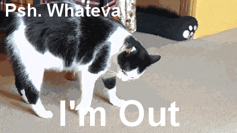
rowan: my boobs hang off of me like mellons. im like a cow with utters. sometimes i feel like those really swole body builders that cant put their arms all the way down. i wonder i ffarren will miss me and these melons. i think my melons will miss her. maybe i coul dfollow her to scottland and become on eof those big busted milk maids. i serve milk. from my breasts. it wont be the same without you farren, vancouver ceases to exist with you gone. ill miss you bum its so juicy. maybe her bum and my boobs woul dbe friends.
eli: wow what an honour to finally put some words on here. We love wording especially when words can just wander from your word bank. I want to say first and foremost that Farren is the coolest person and if any of you star people ever enter her vacinity (trust me you'll know) bow immediately. Looking forward to scottish blog posts i think they might be a little twiney and twindled and ill twiddle my thumbs and twist my tail while reading them(pause). Full gang will reunite in winter and until then let the animals eat anchovies and the acreage learn alphabets of many a language. HAPPY TRAVELS FARREN
bodhi: fuck all yall i got that chicken wing spectacular, twist it up down and around if u fuck with me now. how u gonna fuck on the dancer when u cant flip. my head hurts, my souls heavy, and my weed slaps with the weight of a thousand green hulk dicks.
frankie: oh me? just mucking. nose running, chile infultrates my toungue then throat, im down tho. what a wonder to speak on here, thank you. i digress from my nutrience, im just bobbing to the music, fellow heads bobbing along as we all, in our minds if not words, wish farren farewell. goodbye farren we will miss you until you come back to the motherland, good adventures and such will find you. may you flourish as there is no question to this and your abilities to thrive in whichever environment/biom you call your home (at least for that time being). fear may not chase you and your blooming mind, only opportunity.
charlotte: I'm manning the music. I feel like the conductor on the train that is this evening. the moon was supa red earlier. blood moon for my blood brothers, yknow? I feel like we people are pack animals and I would like to howl with farren and everybody real loud at the moon.awoooooooooo
polina: helloooooooo blog. I have never written a blog post before. I really wanted to write a nice little message about how I appreciate Farren but I have overthunk it so the blog post will see it no more. What will scotland bring to this blog. epic hopefully epic. things. onto the next. blog. love you blog. mefrom5to7 4ever.
daniel: hey everyone. honoured to be wrapping this up. change is upon us!!! the summer alignment of gang is ending and once again everyone is moving in their own directions. it's exciting and terrifying and nervewracking and necessary! anyways daniel signing out. have a nice trip farren.
july 22, 2026
i have nothing to say.
ok fine: pouty face, smooshed peach on sidewalk, picture of a moth from 10 years ago, japchae, freckled shoulder, dog earred borrowed book, dog earred dog, bowling, spilt slushy, falling asleep, being alone, being together, being silent together, feeling anxious, cleaning room, leaving pants on floor again. ok thats all.
i miss u come back 2 me.... dont leave..... not yet. just stick around for awhile.... in all serious tho should i be doing something else with my life? it all feels so unserious. but i am serious about it!!! i want to change. it is frusterating cause it feels like every single other fiber of my being does not want to change. its like i am this one dog thats trying to herd all the sheep into the next field and the sheep dont respect the dog at all adn are like 'whatever man'.
july 17, 2026
i rlly need to stop looking at movie ratings before i watch the movie. i used to think that my opinion is not important because the reality of this world is made up of the opinions of others. like the tree falling in the woods thing. what does my intention matter when others' perception is all that makes me real?? does that make sense..? anyways now i have a little bit of a better understanding of what matters. but still i cling onto what the general public think. like movie ratings. i write off movies that have 3.8/5 stars on letterboxd. which is so stupid. because juno has 3.7/5 and thats the best movie ever.
found these photos that somehow got lost into the expanses of my camera roll.. i think they are from the summer and fall of 2023 (first year):
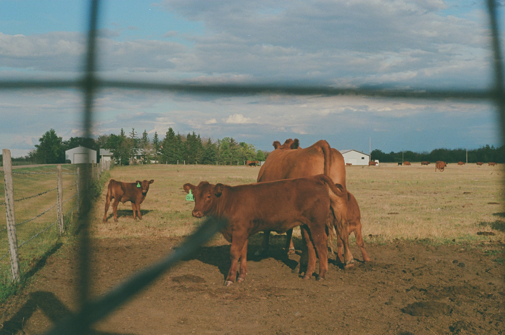

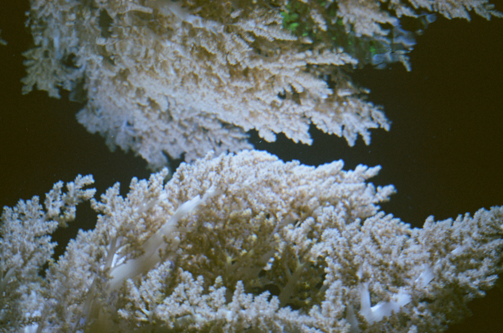


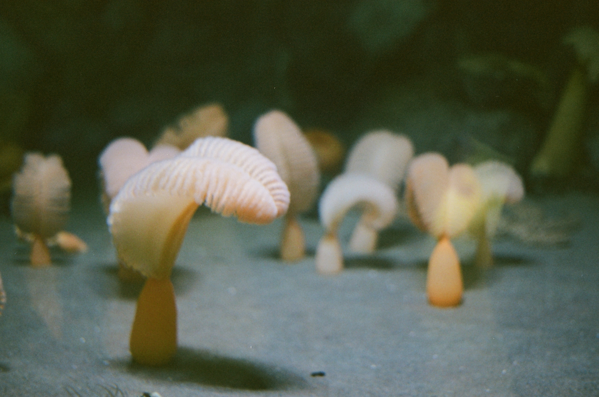
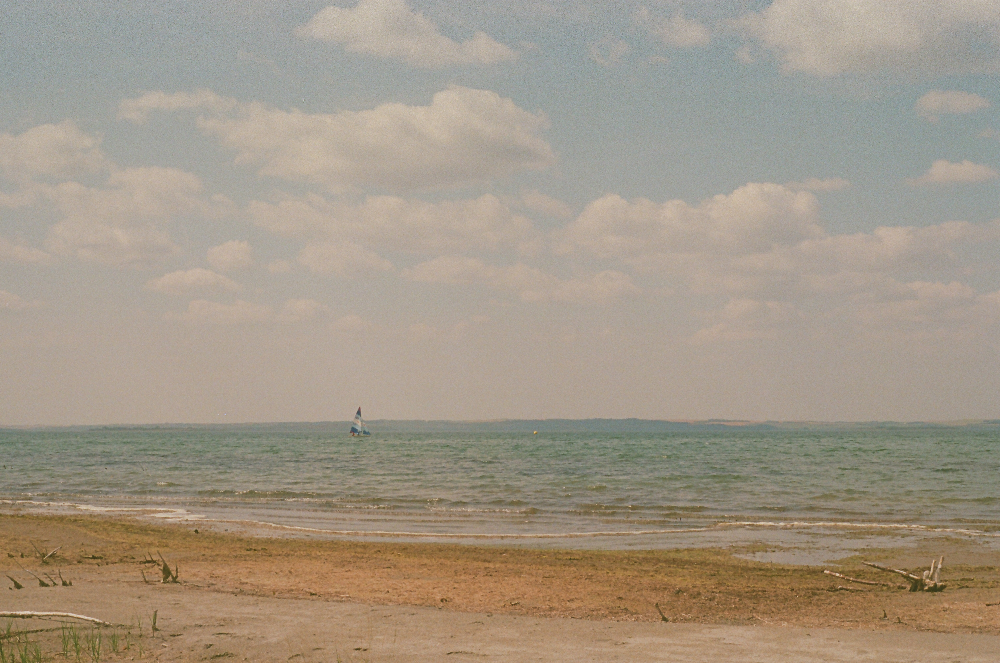
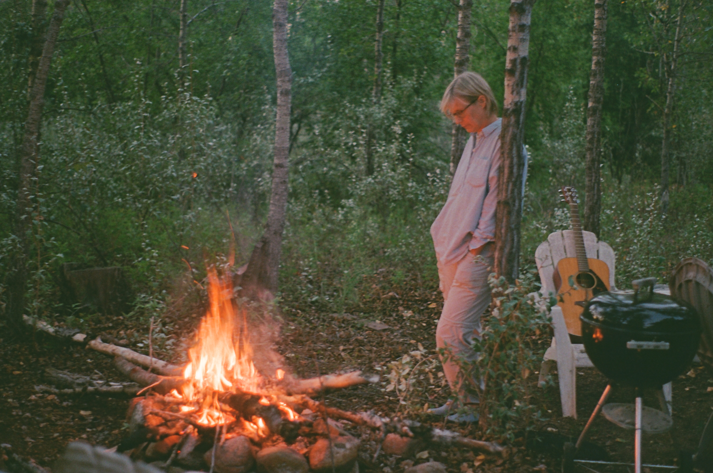
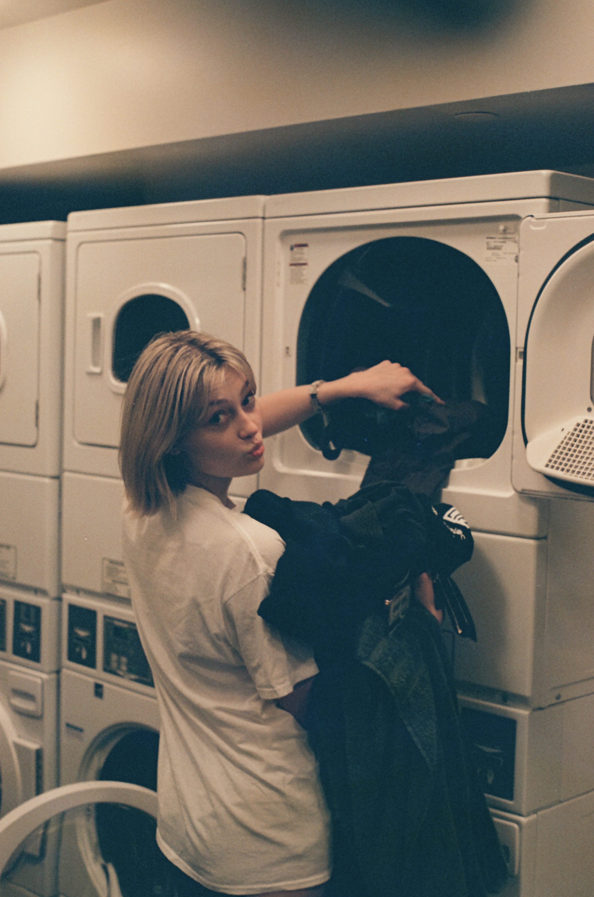
i have been having the ultimate overarching powerful feeling that everyone hates me and doesnt want me around. but i dont think it is true. but i do. but i dont. but i do. everything is in my head........... like everything.... like this whole damn world...! but its also not. the birds outside my window dont worry if i like them. they dont give a shit about me.......
do u know if u press ur palms onto the ground u can hold the whole world in ur hands?
july 10, 2026
oh hey there... i dedicate this entry to the first sip of coffee of the morning. or maybe just credit it to that.. two tall girls are in the same cafe as me. i think i need to grow up and accept my height. because they were both so beautiful and i think if i could accept my height i could be like them. ok enough about that tho... here's something i wrote awhile ago:
"i am feeling a little better which makes me feel a lot better. which makes me not want to trip on the sidewalk and hit my head on the concrete. i know or am coming to know the cruel beauty of this world. but i woke up today feeling a little better and that is enough. breath, like words, will continue across the page. they do not need to carry the weight of a masterpiece, do not need to be extraordinary. they just need to be, like me! so much weight i have found upon me and it is my very own. sit up, stand up and feel the lightness of your feet, of your laugh."
i am realizing that most of the time i write it is prospectively. i read somewhere that fiona apple does the same thing, that her songs are a peptalk to herself. but i think there is so much truth in the advice we give to ourselves. it is the wise part of us. my therapist says that everyone has a wise self within us. we may choose whether or not to listen to her but she is always there. i think writing is the only way i can access her. so many times i have sat down to write anxious and spiralling to find the girl reflecting in the page nurturing and understanding. but she is me!
anyways.... here is a photo of me (in case u forgot what i look like):

july 5, 2026
a girl in a room. it smells like vanilla burning. a vanilla extract factory is burning. or maybe just the vanilla incense i am burning. or the vanilla body butter i got on. today i went to squamish to climb with gaia. it was fun! we went to this weird bar after to get burgers and beers and watch the norway vs england fifa game (cool). norway won which is now my fav team. i feel connected to them because i think my grandma is norwegian. she used to make us lefse which is potato flatbread that u put butter and sugar on. we would eat it at thanksgiving. it is so freaking good omg i havent had it in forever too. she also used to pickle sweet pickles and make chokecherry and crab apple jelly. i liked the crab apple the best. she doesn't make anything anymore because she lives in a home now. i miss her old house. i miss grandpa too. i miss arizona. wow i am making myself kind of sad right now.... she sends me cards for bday and christmas with checks in them.
june 26, 2026
I wanna rock with you! yeah you know that one? mister micheal jackson himself. Yall ever seen him save the world in that music video "we are the world"? no mister micheal jackson... YOU are the world. I dont think hes a pedophile either.. dont cancel me!!!
ok that was rowan if u couldnt tell... hi guys.. oops i mean star people. im at rowans house rn. jumping up and down. or maybe im spinning around. u wouldnt know because u cant see me! but i'll be honest with u, i have one knee up and sitting on the other leg at the diningroom table. my left foot is falling asleep. it is raining outside. i am drinking some lukewarm coffee. trying to live in the infinite eternity of the present moment, u know? maybe for a couple minutes or even seconds today u should try to breathe and live in the little sliver of NOW. because nothing is forever except for the present. but anyways..... i wanna rock with u!!!
june 24, 2026
i have stopped listening to the way things grow. something is changing, subtly i am growing feathers. i am so scared to leave but it does feel like a necessary return to myself. because i find i am only true when truly alone. and to see how much you have grown, you have to rip up the roots that stabilize you. i am to be repotted.
june 22, 2026
a very ordinary temple of a human.
i have been listening to nts radio, specifically the breakfast show w/ flo. she is so cool. i watched an interview with her and laurie anderson (here) and she talked about how she misses old internet specifically old blogs. i thought that was cool. here's her website (honestly i think mine might be cooler but dont tell flo i said that).
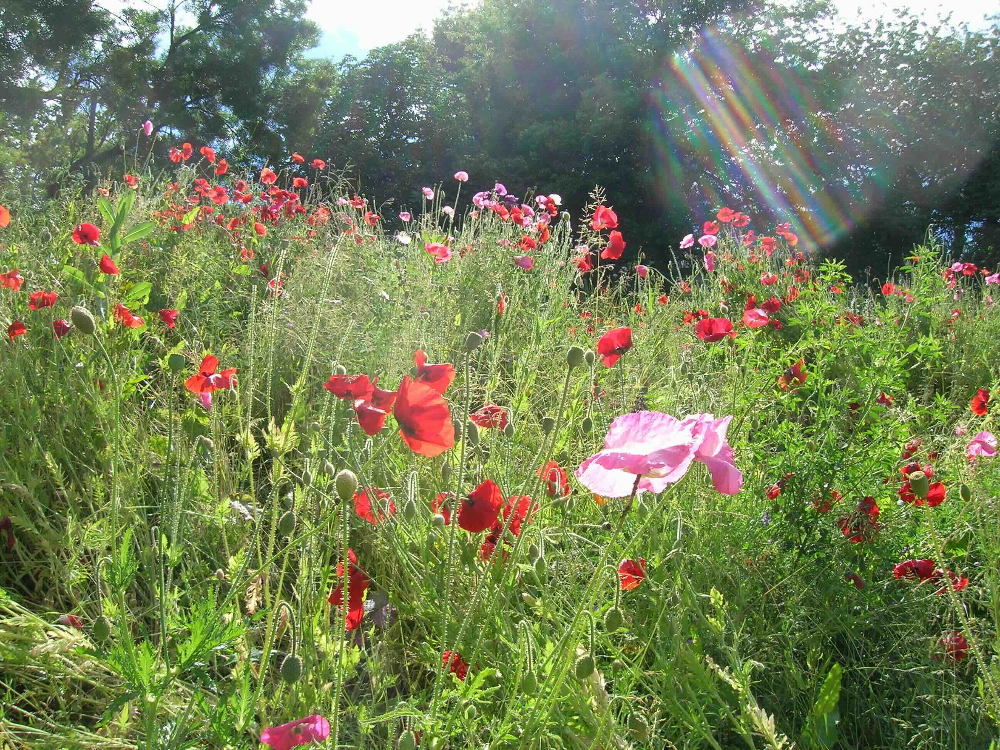